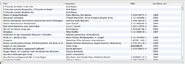

Büchersammlung
Das Grundgerüst der graphischen Oberfläche von Books besteht
aus 4 Teilen - dem Fenster für Bücherlisten, der Büchersammlung,
der Zusammenfassung und dem Titelbild. Oben rechts befindet sich die
Büchersammlung, in der alle Bücher der jeweils ausgewählten
Bücherliste
angezeigt werden. Sie haben damit einen Überblick, welche Bücher
sich gerade in jeder einzelnen Liste befinden und können sich Informationen
zu jedem einzelnen Buch anzeigen lassen.

Standardmäßig wird nur der Titel der Bücher angezeigt.
Wie das Bildschirmphoto (es werden Titel, Autor(en), ISBN und Veröffentlichungsjahr
angezeigt) allerdings bereits zeigt können Sie diese Informationen
auch erweitern.
Anzeige der Büchersammlung anpassen
Die in der Büchersammlung angezeigten Daten werden über den Reiter „Bücherliste” innerhalb des Einstellungsfensters gesteuert. Sie können allerdings die Sortierung und die benötigte Breite der Kriterien direkt ändern, indem Sie die Kriterienfelder beziehungsweise die Trennlinien weiter nach rechts oder links schieben. Wenn Sie eines der Kriterienfelder anklicken, wird dieses in einem dunkleren Blau hervorgehoben und es erscheint ein Pfeil, der nach oben oder unten gerichtet ist. Der Pfeil gibt die Sortierung nach alphabetischer Reihenfolge (Pfeil nach oben) oder die umgekehrte Reihenfolge an (Pfeil nach unten). Bei Zahlenfolgen werden bei einem Pfeil, der nach oben zeigt, die Werte in aufsteigender Reihenfolge sortiert. Der Pfeil, der nach unten zeigt, bedeutet dann eine Sortierung vom größten zum kleinsten Zahlenwert.